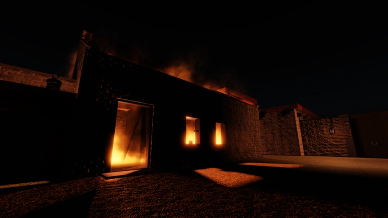
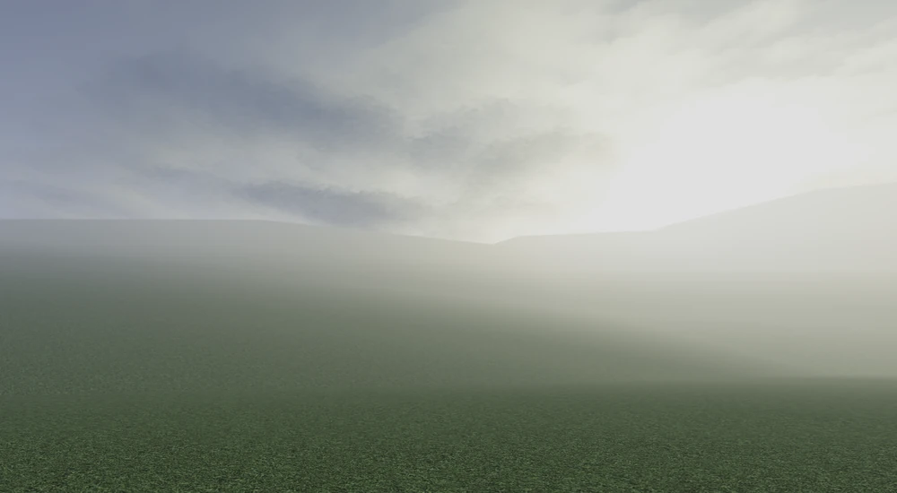

Guts and Blackpowder
Guts and Blackpowder is a zombie teamwork-based Roblox game developed by the Guts and Blackpowder group, the game was created on Janurary 31st, 2023 and is being actively developed.
The game takes place during the later part of the Napoleonic Wars, starting at 1812 during a zombie outbreak. The game's general focus has you and your team trying to survive
the seemingly endless horde of zombies.
This wiki serves as a guide and information hub for anything present in or related to the game.
This wiki is unofficial, and is created by GMAXnoob (me), and is being actively developed.

Contents
Explore the wiki for guides and information on Guts & Blackpowder
Maps
All the maps in Guts and Blackpowder,
includes campaign, endless, and miscellaneous maps, includes a rundown and guide to the map.
includes campaign, endless, and miscellaneous maps, includes a rundown and guide to the map.
Items
All the weapons in Guts and Blackpowder and their usages.
Cosmetics
Details all the cosmetics, regiments, and blemish packs in Guts and Blackpowder.
Nations
All the nations in Guts and Blackpowder, and their included maps.
Zombies
All the zombie types in Guts and Blackpowder and how they work, including their effective counters.
Game mechanics
Guts and Blackpowder's mechanics, how to understand them, and how they work.
Miscellaneous
Pages that don't fit into any catagory, but is still related to G&B, such as groups, easter eggs, and game information. The wiki information is also included in this catagory.
DISCLAIMER
This wiki is not official, nor is it endorsed in any form by the developers of Guts and Blackpowder.
This is purely a fan wiki created for my first project, the wiki is created by gmaxnoob.
All content is subject to change, as G&B is still in development, some changes made to the game might take some time to be reflected into this wiki, especially during patches or updates.
All information is obtained from the official Miraheze wiki and/or the Fandom wiki, alongside individual experimentation or gameplay by me.
Have any suggestions? Bug reports? Or comments? Contact me via Discord  @gmaxnoob.
@gmaxnoob.
@gmaxnoob.